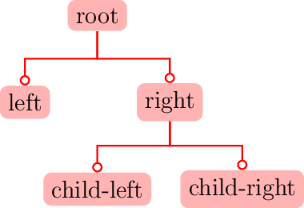
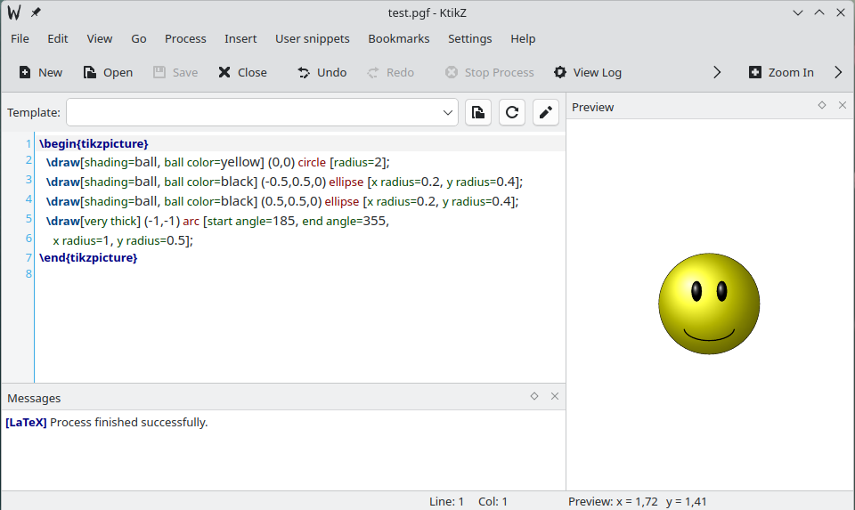

Vektorová grafika #
Vektorová grafika reprezentuje obrazovú informáciu pomocou definovaných útvarov ako sú body, priamky, krivky a mnohouholníky. Na platforme Sphinx je preferovaným prostredím pre zobrazovanie vektorovej grafiky rozsiahla knižnica makier PGF/TikZ. Túto základnú sadu makier je možné rozširovať pomocou knižníc, ktoré sú tématicky zamerané na rôzne typy obrázkov a diagramov ako su napríklad automata pre kreslenie diagramov stavových automatov, circuit pre elektrické obvody, 3d pre kreslenie v trojrozmernom priestore a mnohé ďaľšie. Podrobný popis syntaxe makier PGF/TikZ je v dokumentácii.
V dokumentoch na platforme Sphinx môžeme vektorovú grafiku zobrazovať pomocou makier PGF/TikZ niekoľkými spôsobmi:
Kód jednoduchších obrázkov vytvoríme priamo pomocou makier TikZ v zdrojovok texte dokumentu.
Zdrojový kód obrázku získame vytvorením obrázku niektorom z v lokálnych editoroch podporujúcich syntax makier TikZ ako KtikZ, TikZitT alebo v on-line editoroch, napríklad TikZ Editor.
Vytvorením obrázku v univerzálnych grafických programoch a knižniciach a ich exportom do formátu makier PGF/TikZ, napríklad Inkscape a mnohé ďaľšie.
Konverziou vektorových obrázkov z iných grafických formátov do formátu PGF/TikZ pomocou špecializovaných konvertorov
Obr. 7 Obrázok vo formáte *.svg konvertovaný do makier TikZ.
Metódy vkladania vektorových obrázkov #
Pre zobrazenie vektorovej grafiky v na platforme Sphinx je v tejto publikácii použité rozšírenie TikZ, ktoré umožňuje formátovanie vektorových obrázkov v texte dokumentu rovnako ako pri rastrovej grafike (nastavenie veľkosti obrázku a jeho polohy).
Inštalácia
Rozšírenie nainštalujeme pomocou inštalátora pip
pip install sphinxcontrib-tikz
Konfigurácia
Integrácia programu do platformy Sphinx je v súbore config.py zaradením do zoznamu extensions:
extensions = [
...
"sphinxcontrib.tikz"
...
]
{tikz} #
Direktíva {tikz} umožňuje formátovanie obrázku, zaradenie knižníc do prostredia TikZ a vloženie kódu obrázku.
```{tikz} názov
:libs: zoznam - zoznam TikZ knižníc
:xscale: number - rozmer obrázku v rozsahu 0 ... 100(%)
:align: pos - poloha obrázku left, center, right
:alt: string - alternatívny text
:stringsubst: string
\usetikzlibrary { ... } - zoznam knižníc pre prostredie TikZ
\begin{tikzpicture} - prostredie
makrá Tikz - zdrojový text obrázku
\end{tikzpicture}
```
Alternatívne môžeme vložiť kód obrázku v makrách TikZ z externého súboru:
```{tikz} názov
:include: ./src/test_01.tikz
:xscale: 25
```
Obr. 8 Jednoduchý vektorový obrázok
Zdrojový kód obrázku.
```{tikz} Jednoduchý vektorový obrázok
:xscale: 35
\begin{tikzpicture}
\draw[shading=ball, ball color=yellow] (0,0) circle [radius=2];
\draw[shading=ball, ball color=black] (-0.5,0.5,0) ellipse [x radius=0.2, y radius=0.4];
\draw[shading=ball, ball color=black] (0.5,0.5,0) ellipse [x radius=0.2, y radius=0.4];
\draw[very thick] (-1,-1) arc [start angle=185, end angle=355,
x radius=1, y radius=0.5];
\end{tikzpicture}
```

Obr. 9 Použitie knižnice pre kreslenie diagramov.
Zdrojový kód obrázku.
```{tikz} Použitie knižnice pre kreslenie diagramov.
:xscale: 35
\usetikzlibrary {arrows.meta,trees}
\begin{tikzpicture}
[edge from parent fork down, sibling distance=25mm, level distance=15mm,
every node/.style={fill=red!30,rounded corners},
edge from parent/.style={red,-{Circle[open]},thick,draw}]
\node {root}
child {node {left}}
child {node {right}
child {node {child-left}}
child {node {child-right}}
};
\end{tikzpicture}
```
Referencie na obrazky
V aktuálnej verzii rozšírenia TikZ nie je možné definovať referencia na vektorové obrázky pomocou parametra name. Na obrázky sa ale dá v texte odkazovať pomocou krížových referencií v tvare
V tomto texte sa odkazujeme na [](obrazok).
(obrazok)=
```{tikz} popis obrazku
:include: ./img/file.tikz
:xscale: 45
```
Doplnky #
Lokálne použitie TickZ #
Pre kreslenie vektorových obrázkov pomocou makier TickZ mimo platformy Sphinx môžeme využiť niektorý z lokálne inštalovaných editorov, napríklad KtikZ alebo online editorov, napríklad TikZ Editor.
{kind=link}

Obr. 10 Prostredie editora makier KitkZ.#
Import obrázkov vo formáte svg #
Formát SVG nie je štandardne na platforme Sphinx podporovaný. Obrázky vo formáte SVG môžeme ale konvertovať do formáty TikZ konvertovať pomocou programu svg2tikz, ktorý je voliteľným doplnkom grafického editora Inkscape, môže byť ale použitý aj samostatne ako konzolová aplikácia.
Inštalácia programu je pomocou inštalátora pip
pip install svg2tikz
Parametre programu získame príkazom svg2tikz --help, príklad použitia programu pre konverziu obrázkov
svg2tikz --figonly input_file.svg --output output_file.tikz
Príklad konverzie obrázku vo formáte SVG
Konverzia obrázku
svg2tikz --figonly ./img/cart0157.svg --output ./img/cart0157.tikz
Zobrazenie obrázku
```{tikz} Konvertovaný obrázok
:include: ./img/cart0157.tikz
:xscale: 20
```
Obr. 11 Konvertovaný obrázok
Dokumentácia a odkazy #
Knižnica makie TikZ
TikZ Sphinx Integrácia
Galérie príkladov